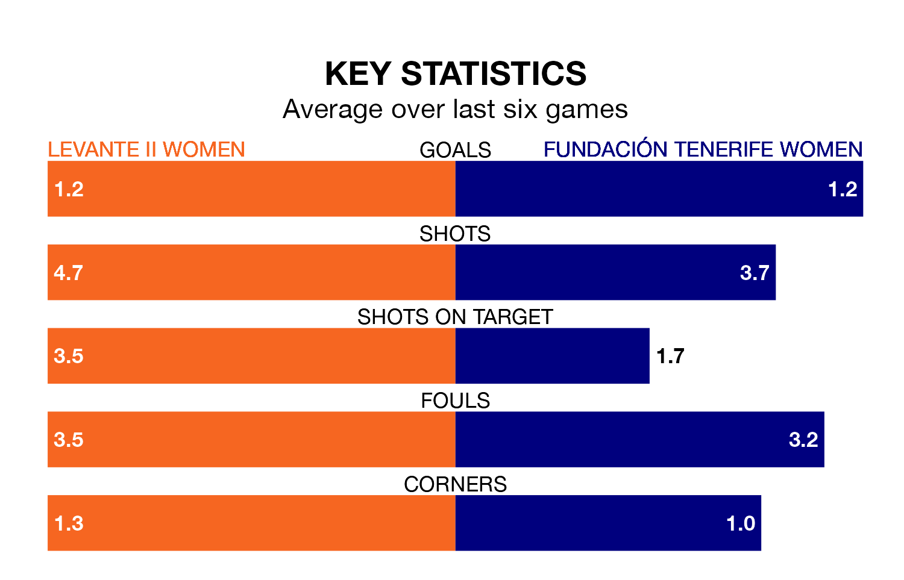

Levante II Women face a challenge to maintain their high-scoring form at home against a tight Fundación Tenerife Women defence on Saturday.
With 27 goals in 16 games, Levante II are the joint-fourth-highest scorers in Segunda Federación Femenina ahead of the 11am kick-off.
They face a Fundación Tenerife side who have scored 22 in 16 matches, but conceded only 13 goals, putting them fourth among the league's tightest defences – only Real Madrid II Women, UD Tenerife II Women and Real Sociedad II Women have conceded fewer goals.
Levante II are in mixed form in Segunda Federación Femenina, with two wins and a draw from their last six games.
With three wins and two draws over that period, Fundación Tenerife's form is better – they have taken 11 points from 18, compared to the hosts' seven.
Levante II are 10th in the table after 16 games, of which they have won eight and drawn three, earning 27 points.
The away team are three places ahead of Levante II in seventh, with nine wins and two draws putting them on 29 points.
Levante II's last match was on January 13, a 2-1 loss against Elche Women, with getting the goal for Levante II.
Fundación Tenerife beat Guiniguada Apolinario Women 3-0 last time out, also on January 13, with on the scoresheet.
Updated: 10:02 (UTC), 19/01/24